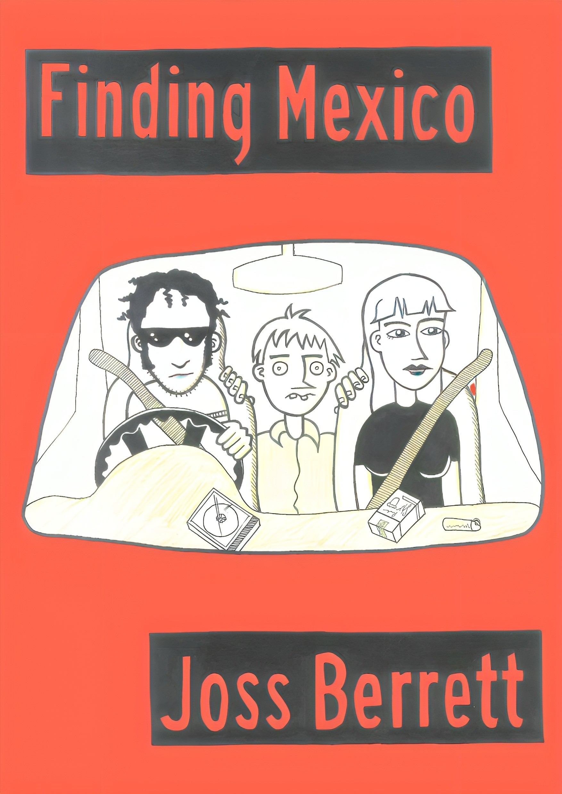

Publications

Finding Mexico
Short Fiction
A pulp travel narrative exploring dislocation, paranoia and tropical heat.

Phong’s Takeaway
Short Fiction
A surreal story set between street food stalls and shifting realities.
Island Gothic Zine
Volume 1 Issue 0
The first issue of Island Gothic’s experimental fiction and zine series.